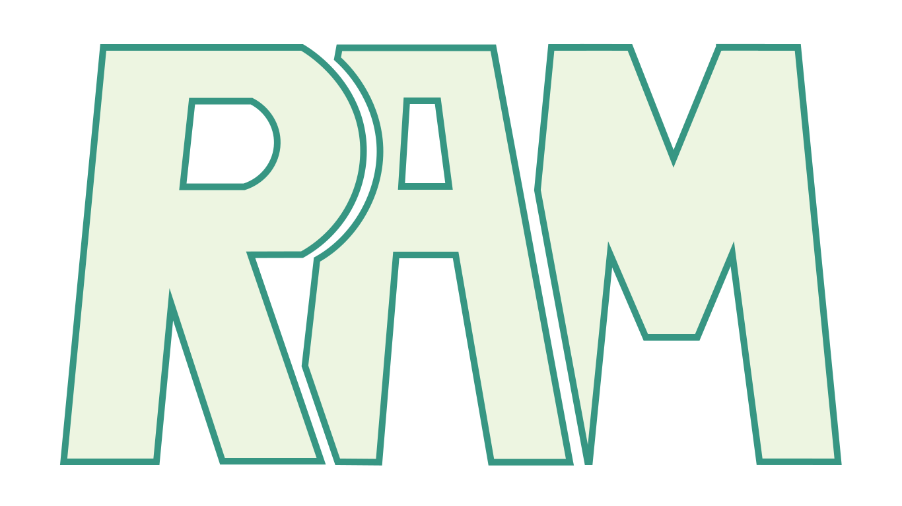

Domov
Zgodovina
DDR Pomnilniki
Ostali Pomnilniki
Viri
Kontakti
Williams Tube:
https://en.wikipedia.org/wiki/Williams_tube
Frederic-Calland-Williams:
https://www.britannica.com/biography/Frederic-Calland-Williams
SDRAM & DDR RAM
https://en.wikipedia.org/wiki/Synchronous_dynamic_random-access_memory
DDR RAM
https://en.wikipedia.org/wiki/DDR_SDRAM
SRAM
https://en.wikipedia.org/wiki/Static_random-access_memory
Memory refresh
https://en.wikipedia.org/wiki/Memory_refresh
Naslov:
GSM1:
e-Pošta:
e-Pošta2:
Pot v Žapuže 3
030-272-671
kp6540@student.uni-lj.si
kristian.pizzo@gmail.com
©Kristian Pizzo